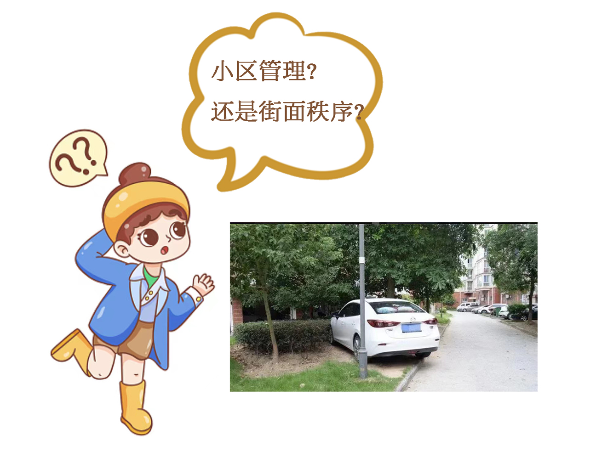
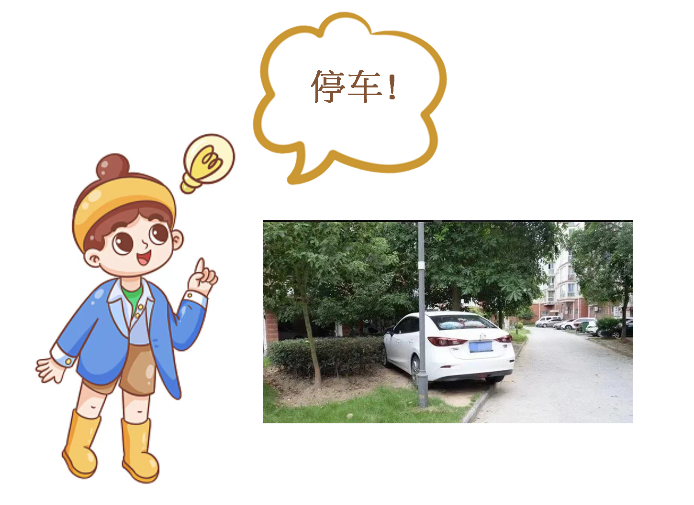
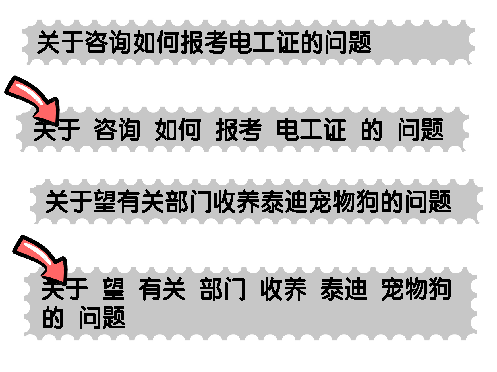

For the problems mentioned above, our solutions are given below:
It should be noted that due to the lack of data provided by Zhongtian Community, we additionally supplement the data recorded by Sanya "12345" citizen support hotline since both Fuzhou and Sanya belong to Second-tier City and they are tourist cities.
Quickly access to the average time required for each type of case
2009.09 - 2013.07
市场营销（本科）
简单放一张平均时间的可视化图
放图 Because we didn't get the data from Zhongtian Community, we used Sanya's data.
With this function, residents just need to choose the type... click! Getting the average time required, they will have a general idea of how long their complaints will be resolved.
Of course, there's still room for improvement, the current categories are not so clear that can help residents as expected. They might be confused sometimes:

So a possible solution is that we can make new specified categories for residents. Using keywords such as "rubbish(垃圾)", "parking(停车)", "cube(管道)", etc, to do the classification might have a better effect.

Automatic classification and assignment of cases
2009.09 - 2013.07
市场营销（本科）
For this part, we used machine learning to get the work done. Basically our thought is to identify the importance of each word for each text and the probability that the text belongs to each category, to get the final results.
We first divided the whole content into many word blocks.

Then calculate the TF-IDF value of each block. Here, TF-IDF(Term Frequency-Inverse Document Frequency) is a statistical measure that evaluates how relevant a word is to the content of one case in a collection of cases. This is done by multiplying two metrics: how many times a word appears in one case, and the inverse frequency of the word across a set of . 放图
For more details, please refer to https://monkeylearn.com/blog/what-is-tf-idf/
At next step, MNB(Multinomial Naive Bayes Classifier) plays the critical role. Briefly, with the calculated TF-IDF value, MNB helps us compute the conditional probabilities of occurrence of different events based on the probabilities of occurrence of each individual event. Actually, Naive Bayes classifiers have worked quite well in many real-world situations, famously document classification and spam filtering. They require a small amount of training data to estimate the necessary parameters.
For more details, please refer to https://www.geeksforgeeks.org/naive-bayes-classifiers/
The method is completed, problem comes behind:
放一些图
- When we use Bayes Classifier, if the numbers of training samples of different categories in the classification task vary greatly, i.e., imbalanced datasets, the result will be biased towards large categories.
For example, our dataset is imbalanced. If we classify complaint information in “你呼我应” according to the type of incident, we can observe a big difference that "小区管理类" accounts for 63.3% of the total samples, while "消防安全类" only accounts for 2.9%. After calculating the error rate of predicting each category, the error rate of predicting "街面秩序类" is the largest, which is 32.4%. Besides, 81.8% of the wrong predictions are "小区管理类", so this category imbalance has a negative impact on the classification results. (It is worth mentioning that "消防安全类", the category with the smallest percentage, is not the category with the largest error rate, probably because the vocabulary used in the "消防安全类" has great characteristics that clearly distinguish this category from other categories. For future improvement, we can adopt undersampling, oversampling, or changing the model to solve the sample imbalance problem.
For more details, please refer to https://www.cnblogs.com/zhangxianrong/p/15214399.html